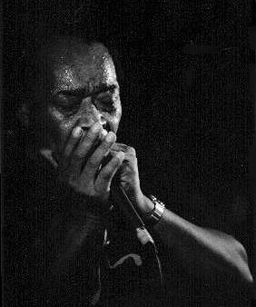

Родившийся в хлопковом регионе Юга США, Джеймс Коттон с раннего детства погружен был в блюзовую музыку. Еженедельные радиоконцерты, которые вел Санни Бой Уилльямсон в легендарной для истории блюза радиопрограмме "Время Короля бисквитов"(King Biscuit Time), произвели столь сильное впечатление, что в возрасте девяти лет Джеймс Коттон бежал из дома, добрался до города Хелена, откуда вещала радиостанция KFFA, разыскал Санни Боя Уилльямсона и в течение шести лет был его учеником, по необходимости подменяя в его группе гитариста или барабанщика. С 16 лет жил в Мемфисе, работал в группе Хаулин Вулфа (Howlin' Wolf), затем с Уилли Никсом (Willie Nix) и Джуниором Паркером (Junior Parker). В 1953-1954гг. сделал первые записи для фирмы "Сан"(Sun) Сэма Филлипса (Sam Phillips). На этих записях Джеймс Коттон предстает вокалистом с мощным сырым грубым голосом и агрессивной энергетикой, однако вовсе не играет на губной гармонике. Соло Пэта Хэра (Pat Hare) на этих записях специалисты рассматривают как уникально раннее проявление рок-эстетики в игре на гитаре. В 1955г. вместе с Пэтом Хэром Джеймс Коттон принимает приглашение в блюзбэнд Мадди Уотерса (Muddy Waters) и переезжает в Чикаго. Соло Коттона звучат в нескольких признанных классикой блюза записях Мадди Уотерса, в том числе и на записи выступления 1960г. на традиционном фолк-фестивле в Ньюпорте. Как солист или аккомпаниатор, Джеймс Коттон с конца 50-х много записывается и с другими чикагскими блюзмэнами: пианистом Отисом Спэнном (Otis Spann), гитаристом Джонни Янгом (Johnny Young) и др. В 1966г. организовал собственную группу; подписал контракт с мэджор-фирмой "Верв"(Verve), для которой записал (при участии Майкла Блумфилда (Michael Bloomfield) в роли сопродюссора и гитариста) три альбома, демонстрирующих не столько чикагский стиль, с которым к тому времени уже прочно ассоциировалось его имя, сколько мемфисский ритмэндблюзовый подход к исполнению блюза в формате небольшого оркестра, в котором существенную роль исполняла свингующая группа медных под руководством известного саксофониста Жена Барджа (James F."Gene" Barge). Популярные американские рок-музыканты высоко ценили исполнительский стиль и свободную манеру ведения концертов Джеймса Коттона, благодаря чему в конце 60-х он часто выступает в программе рок-фестивалей (Sky River Rock Festival, Miami Pop Festival) и открывает выступления рок-звезд: Дженис Джоплин (Janis Joplin), "Грейтфул Дэд"(Grateful Dead), ("Стив Миллер Бэнд"(Steve Miller Band), с которым позже записывал его эстрадные хиты) и др.) и др. Вместе с Уилли Диксоном (Willie Dixon) принимает участие в записи дебютного альбома Джонни Уинтера (Johnny Winter). В 70-х сотрудничал с рок-звездой Тодом Рандгреном (Tod Randgren). В 1974г. записывает для независимой фирмы "Будда" (Buddah) несколько альбомов, получивших высокую оценку у критиков, но имевших ограниченный коммерческий успех. На протяжении 70-х Джеймс Коттон постоянно гастролирует. Один из немногих среди блюзмэнов, в этот сложный для блюза период он сохраняет постоянный ансамбль, который часто используют для своих выступлений и в котором находят работу другие ветераны. Во второй половине 70-х Коттон вновь сотрудничает с Мадди Уотерсом и Джонни Уинтером. Новый этап творчества Джеймса Коттона начинается в 1984г. подписанием контракта с чикагской блюзовой фирмой "Эллигейтор"(Alligator). Концертный альбом, записанный для этой фирмы в 1986г., был номинирован на "Грэмми"(Grammy). Следующий альбом так же был записан на концерте - но в техасском клубе и для техасской независимой блюзовой фирмы "Энтоунз"(Antone's) - и так же был номинирован на "Грэмми". И очередную, третью номинацию принес следующий альбом, записанный для "Эллигейтор" вместе с тремя другими мастерами губной гармоники чикагской школы: Джуниором Уэллсом (Junior Wells), Кареем Бэллом (Carey Bell) и Билли Брэнчем (Billy Branch). С открытием на "Верв" новой большой блюзовой программы, Джеймс Коттон возвращается на фирму и в 1996г. записывает поистине уникальный альбом, в котором "сырой и шершавый" кантри-блюз подается в "салонной" акустике изысканного джазов-комбо. Кроме блюзового гитариста Джо Луиса Уокера (Joe Louis Walker), с которым Джеймс Коттон особенно часто сотрудничает в 90-х, в записи этого альбома принимали участие джазовые музыканты: именитый контрабасист Чарли Хайден (Charlie Haden) и Дейв Максвелл (Dave Maxwell), фортепиано. Соединение несоеденимых изысканности и грубости обернулось несомненной удачей творческого поиска. Коттон удивил всех, кто знал его давно, и альбом был удостоен "Грэмми" и премии им.В.К.Хэнди. Опыт акустического ансамбля без ударных инструментов продолжил следующий альбом, вышедший в 1999г. Не смотря на то, что к концу 90-х у него возникли серьезные проблемы с голосом и ему пришлось пройти несколько хирургических операций на голосовых связках, Джеймс Коттон продолжает много и плодотворно выступать. Вряд ли поклонники бель-канто ходят на его концерты - зато истинно блюзовая атмосфера всегда радует почитателей жанра. Десятилетия музыкального опыта и концерты в элитных клубах Нью-Йорка и Парижа, может, и навели некоторый глянец на его выступления, но не стерилизовали сути его блюза, рожденного в Дельте, закаленного в горячие годы в Мемфисе и прошедшего чикагскую выдержку. ВЭБ™'99
Дискография:
В сети: |